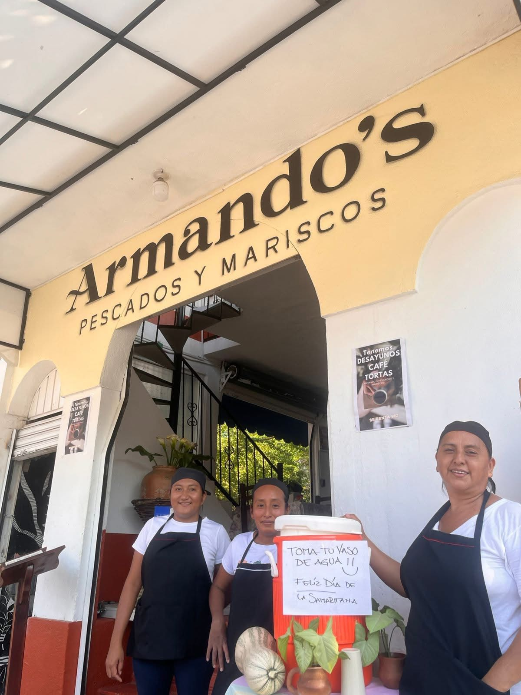
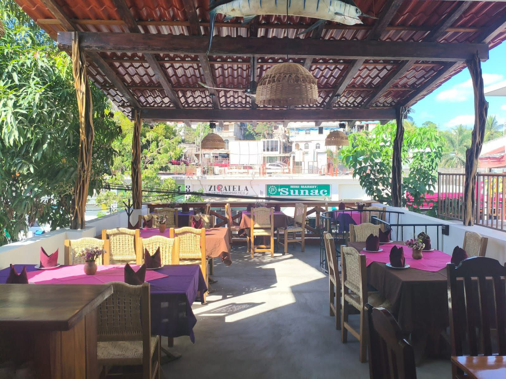
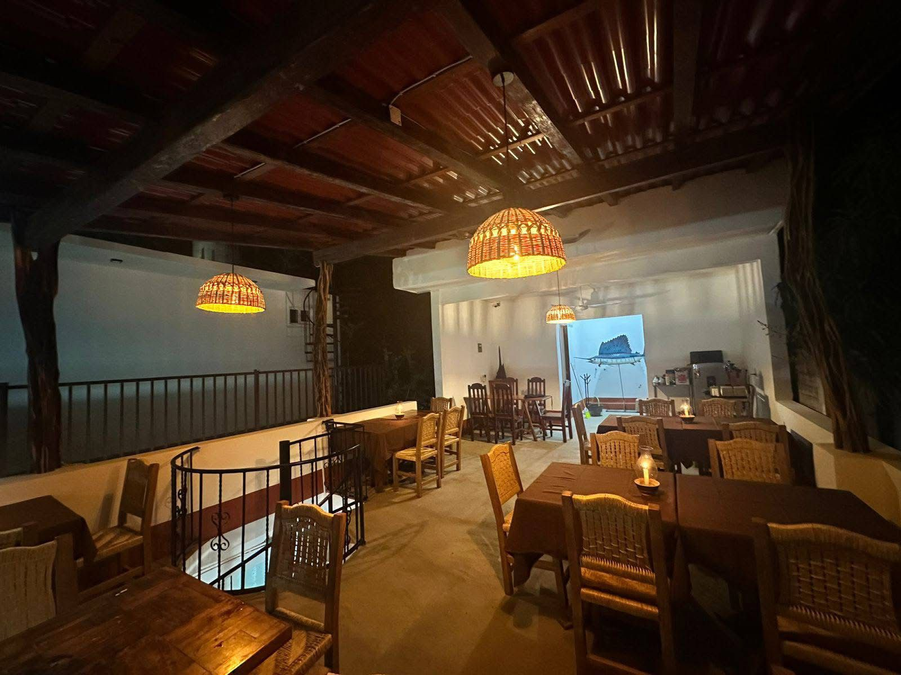
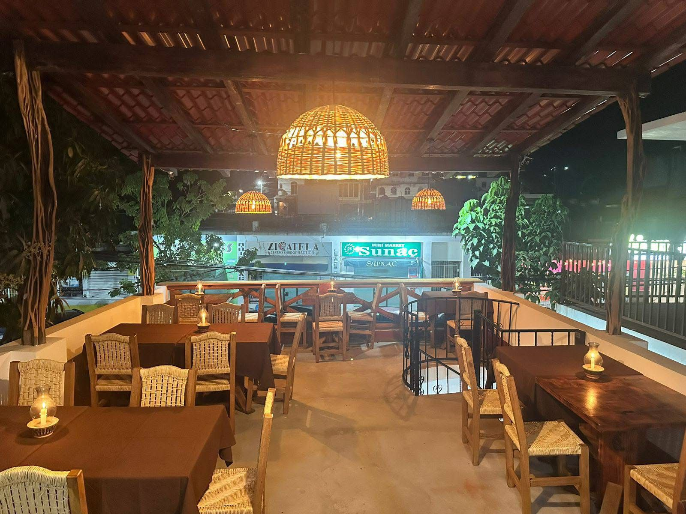

Armando's
Pescados y
Mariscos
Del océano Pacífico a tu mesa. Sabores auténticos de Oaxaca, frescura que se siente y un ambiente que no olvidarás.


Tradición familiar
en cada platillo
Armando's nació del amor por el mar y la cocina oaxaqueña. Lo que comenzó como un sueño familiar en las orillas del Pacífico se convirtió en uno de los restaurantes más queridos de Puerto Escondido.
Nuestras recetas son herencia de generaciones, cocinadas con ingredientes frescos traídos directamente de los pescadores locales cada mañana. Aquí, cada bocado cuenta una historia del mar.
Más que un restaurante, somos parte del alma de Puerto Escondido — el lugar donde las familias crean memorias, los viajeros se enamoran de Oaxaca y el sabor del océano te queda en el corazón.
-
Pescado del DíaTraemos lo más fresco directo de los pescadores de la Bahía Principal cada mañana.
-
Sazón OaxaqueñoHierbas y especias locales que dan a nuestros platillos ese sabor único e inconfundible.
-
Vista InigualableNuestra terraza ofrece una vista única de la ciudad de Puerto Escondido mientras disfrutas tu comida.
-
Ambiente FamiliarUn espacio acogedor donde todos son bienvenidos: turistas, locales y familias enteras.
Vive la experiencia

Ambiente Nocturno
Terraza MágicaVoces de nuestros comensales
"El mejor restaurante de mariscos que hemos probado en todo México. El pescado zarandeado es simplemente increíble. La terraza, el ambiente, el servicio... todo perfecto. ¡Regresaremos cada que vengamos a Puerto Escondido!"
"Genuinamente uno de los mejores lugares para comer en Puerto Escondido. El ceviche es auténtico y fresquísimo, los camarones al mojo de ajo son espectaculares y el precio es muy accesible. ¡Totalmente recomendado!"
"Le restaurant parfait pour découvrir les saveurs du Pacifique mexicain. Poisson ultra frais, service chaleureux et prix honnêtes. La terrasse avec vue sur la ville est magnifique. On y est allés 4 fois en une semaine!"
"Llevamos 3 años visitando Puerto Escondido y siempre volvemos a Armando's. La familia detrás del restaurante le da un toque especial que no se encuentra en otro lado. El salmón a las alcaparras es de otro planeta."
"Atmosphere is truly special — rustic wooden furniture, wicker pendant lights, fresh flowers on every table. The food is exceptional; fresh fish prepared with love and Oaxacan spices. Don't skip the mojo de ajo shrimp. Best meal of our entire trip!"
En el corazón de
Puerto Escondido
A pasos de la Bahía Principal, en la calle más emblemática de Puerto Escondido. Fácil acceso, estacionamiento cercano.
Puerto Escondido, Oaxaca
C.P. 71938, México
8:00 am – 10:00 pm
Abierto todos los días del año
Asegura tu mesa
en el paraíso
Reserva con anticipación, especialmente en temporada alta (diciembre–abril y julio–agosto). Te garantizamos la mejor mesa disponible y un servicio personalizado para tu ocasión especial.
Para grupos de 10 o más personas, eventos especiales o cumpleaños, contáctanos directamente.